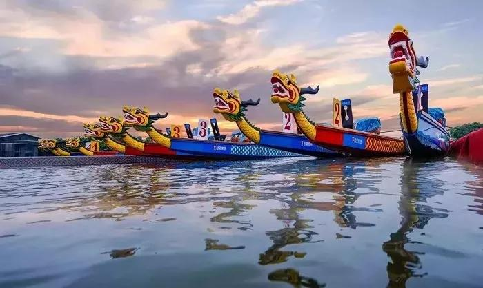

赛龙舟是中国端午节的习俗之一，也是端午节最重要的节日民俗活动之一，在中国南方地区普遍存在，在北方靠近河湖的城市也有赛龙舟习俗，而大部分是划旱龙舟舞龙船的形式。
关于赛龙舟的起源，有多种说法，有祭曹娥，祭屈原，祭水神或龙神等祭祀活动，其起源可追溯至战国时代。赛龙舟先后传入邻国日本、越南及英国等，是2010年广州亚运会正式比赛项目。
2011年5月23日，赛龙舟经国务院批准列入第三批国家级非物质文化遗产名录。

“龙舟竞渡”是在战国时代就已有的习俗。战国时期，人们在急鼓声中划刻成龙形的独木舟，做竞渡游戏，以娱神与乐人，此时的龙舟竞渡是祭仪中半宗教性、半娱乐性的节目。在两湖地区，祭屈原与赛龙舟是紧密相关的。可能屈原及曹娥、伍子胥等逝去后，当地人民也曾用魂舟送其灵魂归葬，故有此俗。但赛龙舟除纪念屈原之外，在各地人们还赋予了不同的寓意。
龙船竞渡前，先要请龙、祭神。如广东龙舟，在端午前要从水下起出，祭过在南海神庙中的南海神后，安上龙头、龙尾，再准备竞渡。并且买一对纸制小公鸡置龙船上，认为可保佑船平安。闽、台则往妈祖庙祭拜。有的直接在河边祭龙头，杀鸡滴血于龙头之上，如四川、贵州等个别地区。
赛龙舟前会举行各种祭祀、纪念之仪式，一般都是点香烛，烧纸钱，供以鸡、米、肉、供果、粽子等。如今这些含有迷信色彩朗仪式已很少见，但在过去，人们祭祀龙神庙时气氛很严肃，多祈求农业丰收、风调雨顺、去邪祟、攘灾异、事事如意，也保佑划船平安。用人们的话说，“图个吉利”，表达人们内心良好的愿望。